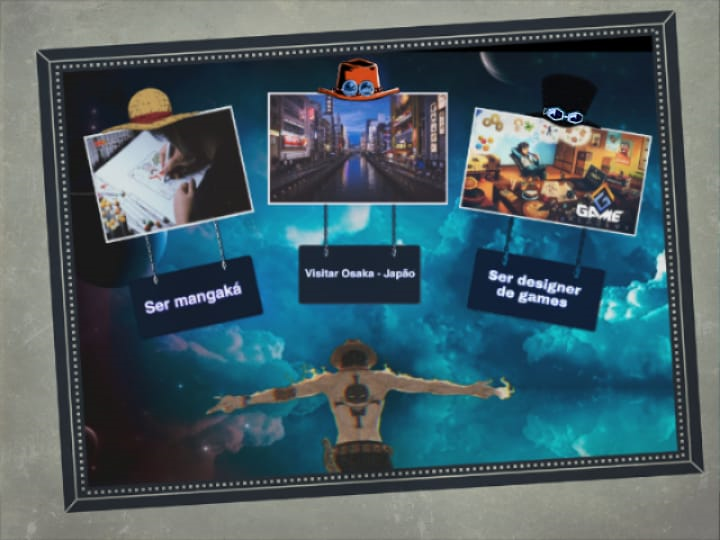

Meus sonhos e minhas metas
São Paulo, 20/08/2020 - Sobre meus sonhos
Bom...
Esse é meu quadro dos sonhos. Eu fiz ele pelo celular. Na primeira imagem à esquerda tem uma imagem do Eiichiro Oda desenhando um volume do mangá de One Piece, e nele, como pode ser visto, ser mangaká é um dos meus sonhos. Na segunda imagem é uma de Osaka que fica localizada no Japão, onde eu gostaria muito de visitar. Na terceira imagem é de designer de games, um sonho que eu gostaria muito de realizar por gostar bastante de jogos.
KANBAN
São Paulo, 02/11/2020

Sobre o KANBAN
Kanban é um cartão de sinalização que controla os fluxos de materiais e produção em uma indústria. Foi criado na década de 1960 na Toyota para o sistema de abastecimento e controle de estoques, este sistema é muito usado por várias empresas em várias áreas, principalmente no controle de atividades. No curso do Camp Jabaquara aprendi a usar o Kanban no controle das atividades do dia a dia. Uso para planejar minhas atividades escolares e domésticas. Pretendo usar o kanban nas atividades profissionais.
Na pandemia
São Paulo, 02/11/2020 - O que faço para passar o tempo;
Nessa pandemia...
Eu ajudo meus pais quando pedem, fico jogando a tarde e assistindo anime de madrugada. Também paro um pouco de noite para tentar. Sendo uma semana desenhando, e outra jogando, e por assim vai...
Esses são uns de meus desenhos:
 Tanjiro Kamado e Nezuko Kamado de Kimetsu no Yaiba
Tanjiro Kamado e Nezuko Kamado de Kimetsu no Yaiba